2024年北京市中考历史真题 原卷解析
2024年北京市初中学业水平考试
历史试卷
考生须知 | 1.本试卷共8页，共两部分，共24题，满分70分。考试时间70分钟。 2.在试卷和草稿纸上准确填写姓名、准考证号、考场号和座位号。 3.试题答案一律填涂或书写在答题卡上，在试卷上作答无效。 4.在答题卡上，选择题用2B铅笔作答，其他试题用黑色字迹签字笔作答。 5.考试结束，将本试卷、答题卡和草稿纸一并交回。 |
第一部分
本部分共20题，每题1.5分，共3分。在每题列出的四个选项中，选出最符合题目要求的一项。
1. 以下北京地区的考古发现与结论对应正确的是（ ）
序号 | 考古发现 | 结论 |
① | 北京人遗址：灰烬、烧石和烧骨等 | 会使用磨制石器 |
② | 山顶洞人遗址：穿孔骨针 | 会建干栏式房屋 |
③ | 门头沟东胡林遗址：距今10000-8000年栽培粟和黍的遗存 | 原始农业形成 |
④ | 平谷上宅遗址：距今约7000年前的陶器 | 贫富分化出现 |
A. ①B. ②C. ③D. ④
【答案】C
【解析】
【详解】据所学知识可知，距今1万年左右，我国出现了最早的人工栽培的农作物，北方地区的先民开始栽培粟和黍，证明原始农业形成，为人类文明做出了重要贡献，③考古发现与结论对应正确，C项正确；北京人采用打制石器的方法，制作不同类型的工具，处于旧石器时代，北京人遗址：灰烬、烧石和烧骨等，反映北京人已经学会使用火，还会长时间保留很火种，①考古发现与结论对应错误，排除A项；山顶洞人遗址：穿孔骨针，表明山顶洞人已掌握钻孔技术和磨光技术，干栏式房屋属于河姆渡人的建筑，②考古发现与结论对应错误，排除B项；上宅村发掘的石器和陶器，在当时是生产工具和生活用具，在今天则是远古文化的标志，不仅凝聚着先民的劳动汗水，更流淌着远古文明闪光的智慧，但未体现出贫富分化，④考古发现与结论对应错误，排除D项。故选C项。
2. 在江苏、湖南等地的春秋时期墓葬中，出土了一些人工冶炼的生产工具。它们是以上高温冶炼的产物，其冶炼过程的主要化学反应为。这类工具的出现表明（ ）
A. 我国早期国家开始形成B. 农业生产力水平的提高
C. 七国之间兼并战争激烈D. 变法推动分封制的瓦解
【答案】B
【解析】
【详解】根据题干“在江苏、湖南等地的春秋时期墓葬中，出土了一些人工冶炼的生产工具。”并结合所学知识可知，春秋战国时期，铁犁牛耕的使用，是社会生产力水平提高的显著标志，B项正确；我国早期国家开始形成于公元前21世纪夏朝的建立，排除A项；为了争夺土地和人口的控制权，获得政治霸主，七国之间兼并战争越来越激烈，排除C项；变法推动分封制的瓦解表明生产关系变化，与题干“人工冶炼的生产工具”表明社会生产力水平提高不符，排除D项。故选B项。
3. 琅琊刻石是公元前219年秦始皇东巡时所刻。刻石上的文字有“器械一量，同书文字……今皇帝并一海内，以为郡县，天下和平。”该文物（ ）
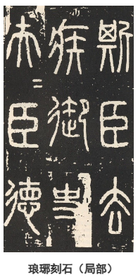
A. 见证了秦灭六国的过程B. 体现了楷书艺术的成熟
C. 记载了秦朝巩固统一的措施D. 反映了秦末农民战争的影响
【答案】C
【解析】
【详解】由题干材料“刻石上的文字有“器械一量，同书文字……今皇帝并一海内，以为郡县，天下和平。”并结合所学可知，这反映了秦始皇统一六国后采取的巩固统一的措施，如统一度量衡、文字和实行郡县制等。因此，C项正确；刻石并未具体描述秦灭六国过程，排除A项；秦朝以小篆作为通行全国的文字，尚未出现楷书，排除B项；刻石内容与秦末农民战争无关，排除D项。故选C项。
4. 下面是某朝代形势图，其中①处机构设立的历史意义是（ ）
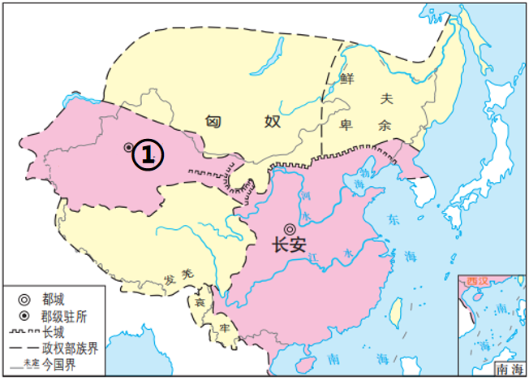
A. 有效管辖西域，保障丝绸之路畅通
B. 管理海外贸易，增加国家财政收入
C. 加强了与吐蕃的交流，促进经济和社会发展
D. 中央政府首次在台湾地区正式建立行政机构
【答案】A
【解析】
【详解】由题干形势图中的”长安“”匈奴“并结合所学可知，题干反映的是西汉形势图，西汉在①处设置西域都护，作为管理西域的最高长官，保障丝绸之路畅通，A项正确；宋朝设置市舶司管理海外贸易，增加国家财政收入，与题干不符，排除B项；加强了与吐蕃的交流，促进经济和社会发展的是唐朝，与题干”匈奴“不符，排除C项；中央政府首次在台湾地区正式建立行政机构是元朝，与题干”长安“不符，排除D项。故选A项。
5. 以下魏晋南北朝时期的历史现象所产生的共同影响是（ ）
北方 | 内迁各族人民与当地汉人错居杂处，民族隔阂逐渐消解。北朝后期，我国北方出现了各民族的大交融。 |
南方 | 北方人民为躲避战乱迁往南方，从而使中原文化和江南文化相互交融。 |
A. 为三国鼎立奠定了基础B. 导致了南方政权的更迭
C. 推动了北魏孝文帝改革D. 为国家统一创造了条件
【答案】D
【解析】
【详解】根据材料“北朝后期，我国北方出现了各民族的大交融”“北方人民为躲避战乱迁往南方，从而使中原文化和江南文化相互交融”并结合所学可知，魏晋南北朝时期南北方民族交融有利于减少民族隔阂，为隋的统一奠定了基础，D项正确；赤壁之战为三国鼎立奠定了基础，排除A项；南方政权的更迭与材料“北朝后期，我国北方出现了各民族的大交融”不符合，排除B项；北魏孝文帝改革与材料“北方人民为躲避战乱迁往南方，从而使中原文化和江南文化相互交融”不符合，排除C项。故选D项。
6. 唐都长安约有百万人口，其中有来自中亚、波斯、大食、新罗等地的商人、使节、留学生数千人。很多外商在西市开设货栈，买卖货物。这反映出（ ）
A. 唐朝政治制度完备B. 长安城布局严整对称
C. 唐朝民族关系和睦D. 长安是国际性大都市
【答案】D
【解析】
【详解】根据题干“其中有来自中亚、波斯、大食、新罗等地的商人、使节、留学生数千人。很多外商在西市开设货栈，买卖货物”和所学知识可知，唐都长安城既是当时中国政治、经济和文化交往的中心，也是一座国际性的大都会。城内外商云集，大批外国人在中国经商、学习、居住，D项正确；唐朝政治制度完备，比如三省六部制，科举制等，材料没有涉及，排除A项；题干反映了长安是国际性大都市，未体现长安城布局，排除B项；没有涉及少数民族的信息，无法看出唐朝民族关系和睦，排除C项。故选D项。
7. 某班同学开展实践活动，通过以下环节模拟我国古代一项伟大发明的应用流程。这项活动有助于了解（ ）
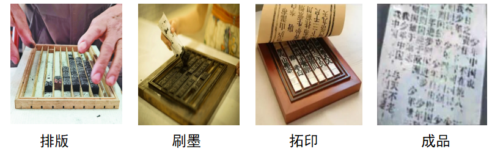
A. 两汉时期的造纸工艺B. 北宋时期的科技创新
C. 南宋时期的航海技术D. 宋元时期的军事变革
【答案】B
【解析】
【详解】根据材料信息“排版、刷墨、拓印、成品”结合所学知识可知，北宋时匠人毕昇发明了活字印刷术。活字印刷术先制成单字的阳文反文字模，然后按照稿件把单字挑选出来，排列在字盘内，排好版，接着刷上墨，然后在排好的版上铺上一张纸，接下来是拓印，先轻轻的拖使纸贴在字上，接着在纸上快速的拖擦，然后由前往后慢慢的揭起来，最后就印刷完成了。材料是活字印刷术的步骤，是北宋时期的科技创新，B项正确；造纸术的主要步骤有舂捣、捞取、晾晒等，与材料“排版、刷墨、拓印、成品”不符，排除A项；南宋航海技术主要体现在造船工艺的精湛、航海设备的先进、指南针技术的革新以及综合航海技术的应用，与材料“排版、刷墨、拓印、成品”无关，排除C项；宋代人利用火药制成了多种火器，如火箭、火炮、火铳等，宋元时期的军事变革主要表现在军队组织的革新和军事技术的革新两个方面，与材料“排版、刷墨、拓印、成品”无关，排除D项。故选B项。
8. “南海西北陆坡一号、二号沉船遗址”是2023年我国十大考古发现之一。该遗址位于海南岛与西沙群岛之间的南海海底，出水了大量明代瓷器。这一考古发现（ ）
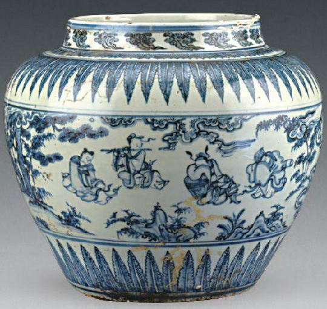
遗址出水的青花人物纹罐
①反映我国人民在南海地区的活动 ②是海上丝绸之路贸易往来的见证
③可用于研究明代的瓷器烧制工艺 ④印证明代引进了原产美洲的玉米
A. ①②③B. ①②④C. ①③④D. ②③④
【答案】A
【解析】
【详解】根据材料“位于海南岛与西沙群岛之间的南海海底，出水了大量明代瓷器。”结合所学知识可知，“南海西北陆坡一号、二号沉船遗址”反映了我国人民在南海地区的活动，也是海上丝绸之路贸易往来的见证，出水的大量明代瓷器可用于研究明代的瓷器烧制工艺，故①②③符合题意，A项正确；明代引进了原产美洲的玉米，但材料中没有涉及引进美洲的农作物玉米，④不符合题意，BCD项都包含④，排除BCD项。故选A项。
9. 某班举办反抗外来侵略专题展，其中有倭寇图卷、林则徐虎门销烟池遗址、北洋水师致远舰等图片。以下图片可以入选这一专题的是（ ）
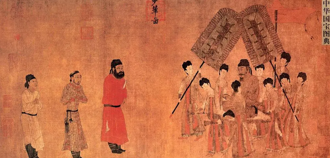 | 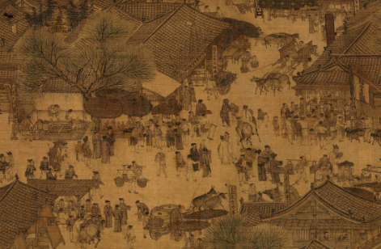 | 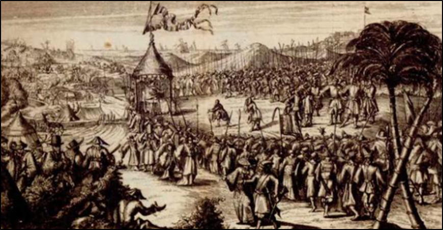 | 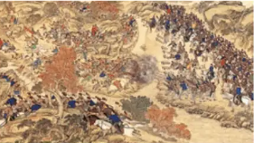 |
A.步辇图（局部） | B.清明上河图（局部） | C 荷兰军队向郑成功投降图（局部） 荷兰军队向郑成功投降图（局部） | D.清军平定大、小和卓叛乱图（局部） |
A. AB. BC. CD. D
【答案】C
【解析】
【详解】根据所学知识可知，“荷兰军队向郑成功投降图（局部）”与郑成功收复台湾相关，反映的是抗击外来侵略，与题干反抗外来侵略相符，C项正确；“步辇图（局部）”反映的是唐朝和吐蕃的的民族关系，与题干反抗外来侵略不符，排除A项；“清明上河图（局部）”反映的是北宋都城东京繁荣的景象，与题干反抗外来侵略不符，排除B项；“清军平定大、小和卓叛乱图（局部）”反映的是清朝时期平定大、小和卓叛乱叛乱的史实，与题干反抗外来侵略不符，排除D项。故选C项。
10. 下面是19世纪70年代的一份铁路时刻表（部分内容），可用于研究（ ）
本线自1876年7月3日星期一开始， 在上海与江湾间准时行驶火车 开车时刻如下 上海开：7:00 9:00 *11:00 *13:00 15:00 17:00 江湾开：7:30 9:30 *11:30 *13:30 15:30 18:00 每逢星期日，凡带*记号的车次均停开 |
A. 通讯事业的发展B. 出行方式的变化C. 新式教育的普及D. 政治制度的变革
【答案】B
【解析】
【详解】根据题干信息“19世纪70年代的一份铁路时刻表（部分内容）”可知，铁路属于传入中国的新式交通工具，这些出行时间表可以用于研究当时人民的出现方式变化，B项正确；近代通讯事业的发展主要变化是电报、电话等的使用，与题干信息不符，排除A项；新式教育的普及主要表现的是新式学校的建立、新课程的设置、教育人数的增加等，与题干信息不符，排除C项；政治制度的变革主要表现是旧制度的瓦解、新制度的确立，与题干信息不符，排除D项。故选B项。
11. 1911年，上海的一首竹枝词写道：“武昌起义众心惊，报馆齐张革命声。争向门前探捷报，望平街上路难行……但看某城光复矣，眉飞色舞竟忘餐。”这表现出民众（ ）
A. 推动了义和团运动的发展B. 支持辛亥革命
C. 反对袁世凯窃取革命果实D. 声援北伐战争
【答案】B
【解析】
【详解】根据所学知识可知，1911年10月10日，武昌起义一声枪响，辛亥革命全面爆发，结束了中国长达两千年之久的君主专制制度，材料“武昌起义众心惊，报馆齐张革命声。争向门前探捷报，望平街上路难行……但看某城光复矣，眉飞色舞竟忘餐。”表现出民众支持辛亥革命，对革命胜利的喜悦和对未来的乐观期待，B项正确；义和团运动是指19世纪末中国发生的一场以“扶清灭洋”为口号的农民运动，1900年义和团运动已经失败，排除A项；1912年3月，袁世凯窃取革命胜利果实，材料“1911年”时，袁世凯还没有窃取革命果实，排除C项；北伐战争是由中国国民党领导下的国民政府以国民革命军为主力，蒋介石为总司令，于1926年至1928年间发动的统一战争，与材料时间“1911年”不符，排除D项。故选B项。
12. 下表内容是近代报纸《申报》在1928年和1939年使用“民族”“中华民族”两词的次数，导致这一变化的时代背景是（ ）
| 1928年 | 1939年 |
民族 | 1119 | 2369 |
中华民族 | 183 | 372 |
A. 二次革命和护国战争B. 第一次国共合作实现
C. 中华民族的抗日战争D. 人民解放战争的胜利
【答案】C
【解析】
【详解】根据材料信息“在1928年和1939年使用”，结合所学知识可知，此时期为抗日战争时期，民族矛盾上升为了中国社会的主要矛盾，《申报》在1939年使用“民族”“中华民族”的次数较1928年成倍增长，正是因为抗日战争的时代背景，C项正确；二次革命发生于1913年，护国战争发生于1915年，与材料时间不符，排除A项；1927年4月12日，蒋介石集团在上海发动四一二清党反共事件，国共合作关系开始破裂，与材料时间不符，排除B项；1949年人民解放战争取得胜利，与材料时间不符，排除D项。故选C项。
13. 下图是万隆会议10周年纪念铜章，两个大写字母A分别代表亚洲（ASIA）与非洲（AFRICA），中间的罗马数字X代表10周年。这一纪念章表现了（ ）
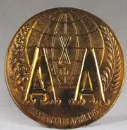
A. 非暴力不合作运动的发展B. 亚非国家间的团结与合作
C. 亚非国家改变了两极格局D. 巴拿马收回运河区的主权
【答案】B
【解析】
【详解】根据题干“下图是万隆会议10周年纪念铜章，两个大写字母A分别代表亚洲（ASIA）与非洲（AFRICA），中间的罗马数字X代表10周年”及结合所学可知，万隆会议是1955年在印度尼西亚万隆召开的第一次亚非国家会议，旨在促进亚非国家之间的团结与合作。纪念铜章上的两个大写字母A分别代表亚洲(ASIA)与非洲(AFRICA)，中间的罗马数字X代表10周年，象征着亚非国家在万隆会议后十年的团结与合作。因此，这一纪念章表现了亚非国家间的团结与合作，B项正确；非暴力不合作运动是指印度甘地领导的反抗英国殖民统治的运动，排除A项；亚非国家的合作冲击了两极格局，排除C项；材料是指亚非团结与合作，而不是巴拿马收回运河区的主权，排除D项。故选B项。
14. 1997年7月1日的一篇新闻报道中说，1841年1月英国侵略军将米字旗插上海岛，今天五星红旗在此升起。报道中对应的历史事件分别是（ ）
A. 鸦片战争 香港回归祖国B. 第二次鸦片战争 澳门回归祖国
C. 甲午中日战争 香港回归祖国D. 八国联军侵华战争 澳门回归祖国
【答案】A
【解析】
【详解】根据题干“1997年7月1日的一篇新闻报道”“1841年1月英国侵略军将米字旗插上海岛”和所学知识可知，18世纪初英国开始对华进行鸦片贸易，1841年1月英国派兵强行占领香港。1842年英国政府同清政府签订了《南京条约》，规定把香港岛割让给英国。1997年7月1日中国对香港恢复行使主权，香港回归，因此报道中对应的历史事件分别是鸦片战争、香港回归祖国，A项正确；第二次鸦片战争开始于1856年，澳门回归祖国是1999年，排除B项；甲午中日战争开始于1894年，排除C项；八国联军侵华战争开始于1900年，排除D项。故选A项。
15. 16世纪，西欧出版的《世界地图集》最初有69幅地图，之后的十几年间又增加了82幅，很多是之前尚未涉及的地区。与这一变化直接相关的是（ ）
A. 手工工场出现B. 资本主义萌芽C. 新航路的开辟D. 进化论的提出
【答案】C
【解析】
【详解】根据材料“16世纪，西欧出版的《世界地图集》最初有69幅地图，之后的十几年间又增加了82幅，很多是之前尚未涉及的地区”并结合所学可知，新航路开辟以后，欧洲与亚洲、美洲、非洲之间建立了直接的商业联系，往来日益密切；世界开始连为一个整体，世界的观念也从此逐步确立起来，C项正确；材料信息没有涉及到手工工场的出现，排除A项；材料反映的是新航路的开辟使世界开始成为一个整体，与资本主义萌芽无关，比如出现雇佣关系，排除B项；19世纪，达尔文提出进化论的观点，与材料信息时间不符合，排除D项。故选C项。
16. 以下时间轴反映出（ ）
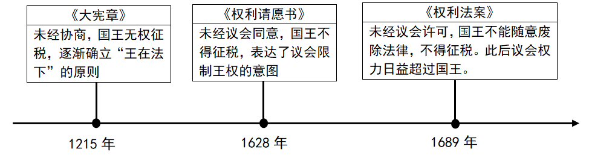
A. 农奴制度阻碍了欧洲资本主义的发展B. 北美殖民地摆脱英国统治而独立
C. 英国资产阶级革命影响了法国大革命D. 君主立宪制体现了英国政治传统
【答案】D
【解析】
【详解】由题干时间轴并结合所学可知，1689年《权利法案》的颁布，标志英国君主立宪制度的确立，它以法律的形式限制了王权，保障了议会的权利，而在此之前的《大宪章》《权利请愿书》都体现了限制王权的原则，因此英国君主立宪制可以说传承了英国限制王权的政治传统，D项正确；农奴制度阻碍了俄国资本主义的发展，排除A项；题干反映的是英国的历史，和美国无关，排除B项；题干没有涉及法国大革命，排除C项。故选D项。
17. 历史学家认为：这场战争是日益加剧的帝国主义趋势和帝国主义各国政治经济发展不平衡的直接后果。1914年以前，两大军事集团的军备竞赛变本加厉，同时一些军事领导人对速战速决抱有不切实际的幻想。以上内容说明的是（ ）
A. 第一次世界大战爆发的原因B. 第一次世界大战的主要进程
C. 欧亚战争策源地形成的过程D. 世界反法西斯战争胜利意义
【答案】A
【解析】
【详解】根据题干信息“帝国主义趋势”“政治经济发展不平衡”、“两大军事集团的军备竞赛等”结合所学可知，19世纪末20世纪初，随着帝国主义各国政治经济发展不平衡，为了重新瓜分殖民地，形成了同盟国、协约国两大军事集团，两大军事集团的扩军备战、军备竞赛，使帝国主义国家之间矛盾进一步激化，第一次世界大战一触即发，A项正确；第一次世界大战主要进程的时间、转折、结束等在题干中没有体现，排除B项；欧亚战争策源地是在德、日法西斯政权建立及扩张过程中形成的，排除C项；题干反映的是第一次世界大战，而世界反法西斯战争是第二次世界大战，排除D项。故选A项。
18. 1819年玻利瓦尔解放了哥伦比亚等地，1990年纳米比亚独立。以上事件都属于（ ）
A. 争取民族独立的斗争B. 维护国家统一的抗争
C. 资本主义制度的扩展D. 亚洲的民族民主运动
【答案】A
【解析】
【详解】由题干设问“1819年玻利瓦尔解放了哥伦比亚等地，1990年纳米比亚独立。以上事件都属于”并结合所学可知，1819年玻利瓦尔解放哥伦比亚等地和1990年纳米比亚独立，都是被压迫民族争取摆脱殖民统治，实现民族独立的斗争。因此，这些事件都属于争取民族独立的斗争，A项正确；题干反映的是事件是争取民族独立不是维护国家统一，排除B项；资本主义制度的扩展发生在19世纪60年代，排除C项；玻利瓦尔属于拉美独立运动，纳米比亚独立属于非洲，排除D项。故选A项。
19. 习近平在纪念马克思诞辰200周年大会上指出：“在人类思想史上，没有一种思想理论像马克思主义那样对人类产生了如此广泛而深刻的影响。”以下史实能说明此观点的是（ ）
①《拿破仑法典》的颁布 ②巴黎公社的建立
③十月革命的胜利 ④中国新民主主义革命的胜利
A. ①②③B. ①②④C. ①③④D. ②③④
【答案】D
【解析】
【详解】据材料“在人类思想史上，没有一种思想理论像马克思主义那样对人类产生了如此广泛而深刻的影响。”可知，材料的主旨是描述马克思主义的影响，据所学知识可知，1848年受共产主义者同盟的委托，马克思和恩格斯起草了《共产党宣言》，它的发表标志着马克思主义的诞生。这为世界无产阶级提供了最锐利的思想武器，有力的推动了世界无产阶级革命的发展。从此国际工人运动在马克思主义的指导下，进入一个新的历史时期，在马克思主义影响下，1871年巴黎公社成立，1917年十月革命的胜利，1949年新中国成立取得了新民主主义革命的胜利，②③④符合题意，D项正确；1804年3月21日，拿破仑签署后正式颁布实施《拿破仑法典》，属于资产阶级文献，与马克思主义无关，①不符合题意，排除ABC项。故选D项。
20. 中国对世界的发展产生重大影响。以下表述正确的是（ ）
① | 郑和下西洋 | 促进了西欧租地农场的出现 |
② | 提出了和平共处五项原则 | 成为处理国与国之间关系的基本准则 |
③ | 屠呦呦团队发现了有效抵抗疟疾的青蒿素 | 为人类生命健康事业作出了巨大贡献 |
④ | 积极参与全球治理体系改革和建设 | 推动全球治理朝着更加公正合理的方向发展 |
A. ①②③B. ①②④C. ①③④D. ②③④
【答案】D
【解析】
【详解】据所学可知，郑和下西洋促进中国与亚非国家地区的友好关系，与西欧租地农场的出现无关，①史实和结论不符；20世纪50年代周总理提出的和平共处五项原则，标志着新中国外交政策的成熟，成为处理国与国之间关系的基本准则，②史实和结论相符，②正确；屠呦呦团队发现了有效抵抗疟疾的青蒿素，为人类生命健康事业作出了巨大贡献，③正确；中国积极参与全球治理体系改革和建设，有利于推动全球治理朝着更加公正合理的方向发展，④正确。D项正确。排除ABC项。故选D项。
第二部分
本部分共4题，共40分。
21. 水稻种植史是中国农业不断成长、进步的生动写照。
材料一
时期 | 概况 |
史前 | 目前世界上最早的栽培稻发现于中国，多地发现了距今12000-10000年的栽培稻遗存。距今约7000年，河姆渡人使用以骨耜为主的工具种植水稻 |
秦汉 | 水稻种植运用了去除杂草、及时灌水排水等技术，并使用草木灰等天然肥料。 |
魏晋南北朝 | 江南地区普遍实行了麦稻兼作，五岭以南地区还种植了双季稻，水稻种植推广了选种育种、施用粪肥、育秧移栽等技术。《齐民要术》记载了水稻种植技术。 |
隋唐 | 发明并推广曲辕犁和筒车等生产工具。曲辕犁轻便灵巧，广泛应用于稻作。 |
宋元 | 水稻一年两熟制、稻麦复种技术得到推广，耕地利用率得到提高。长江中下游广泛使用拔秧工具秧马 |
明清 | 明代徐光启的著作 A 系统总结了南方稻田的旱作技术。水稻育秧技术也得到了快速发展，形成了多种育秧方法 |
（1）依据材料一并结合所学，A处是_______（填序号）。概括中国古代水稻种植发展的表现。
①《本草纲目》 ②《农政全书》 ③《天工开物》
材料二 唐代以前，水稻在全国粮食生产中不占主要地位。宋代太湖地区的水稻亩产量约450斤，比唐代南方的水稻亩产量增长了60%左右。当时有“苏湖熟，天下足”之说，水稻已经是养活半数中国人的作物。
——摘编自曾雄生《中国农业通史》
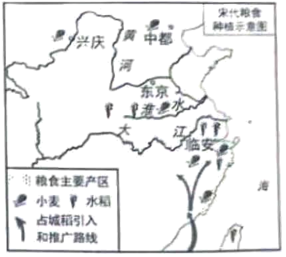
（2）依据材料二，写出宋代水稻种植业的发展情况。
材料三
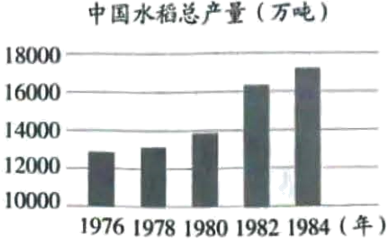 20世纪70年代，我国成功培育出籼型杂交水稻，亩产比常规稻增加20%左右，杂交水稻占水稻种植总面积的比例从1976年的0.38%增长到1984年的23%。 ——依据《中国农业统计资料》等 | 一位同学创作的宣传画 |
（3）依据材料三并结合所学，指出1976-1984年我国水稻总产量的变化趋势，并分析原因。综合以上材料，说明这幅宣传画的含义。
【答案】（1）内容：②。
表现：种植历史悠久，种植范围不断扩大，品种不断改进，生产技术不断提高。
（2）表现：水稻产量高，成为主要的粮食作物；水稻种植范围广；引进占城稻。
（3）趋势：我国水稻总产量不断增长。
原因：20世纪70年代，袁隆平成功培育出籼型杂交水稻，促进水稻产量的增长；家庭联产承包责任制在全国推广，解放了农村生产力，提高了农民的种粮积极性。
含义：缅怀袁隆平，增强粮食安全意识等。
【解析】
【小问1详解】
内容：根据材料一“明代徐光启 著作”和结合所学知识，明代徐光启著有《农政全书》，全面总结了我国古代农业生产的 先进经验、技术革新。
著作”和结合所学知识，明代徐光启著有《农政全书》，全面总结了我国古代农业生产的 先进经验、技术革新。
表现：根据材料一“目前世界上最早的栽培稻发现于中国”分析可知水稻种植历史悠久；根据材料一“水稻种植运用了去除杂草、及时灌水排水等技术”“水稻一年两熟制、稻麦复种技术得到推广”等分析可知生产技术不断提高；根据材料一信息分析还可知种植范围不断扩大，品种不断改进。
【小问2详解】
表现：根据材料二“宋代太湖地区的水稻亩产量约450斤……水稻已经是养活半数中国人的作物”分析可知水稻产量高，成为主要的粮食作物；根据图例信息并分析可知水稻种植范围广，引进占城稻。
【小问3详解】
趋势：根据柱状图并分析可知我国水稻总产量不断增长。
原因：根据材料三“20世纪70年代，我国成功培育出籼型杂交水稻，亩产比常规稻增加20%左右”和结合所学知识，20世纪70年代，袁隆平成功培育出籼型杂交水稻，促进水稻产量的增长；根据材料三图，中国水稻总产量是从1978年后增长速度加快，可知原因还有：家庭联产承包责任制在全国推广，解放了农村生产力，提高了农民的种粮积极性。
意义：本题属于开放性试题，根据宣传画可知反映的是我国粮食有关的主题画，结合袁隆平的贡献，由此可以分析宣传画表达对袁隆平的缅怀和粮食安全意识。
22. 用好红色资源 赓续红色血脉
材料一 一位同学参观了中国共产党第一次全国代表大会纪念馆，根据馆中壁画《日出东方》手绘了以下作品。画中红色地标以天安门为中心再现了新民主主义革命时期党的伟大征程。
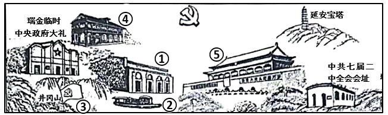
（1）依据材料一，从①至⑤中任选一处红色地标，写出其反映的重大历史事件及其意义。
材料二 一位同学参观了中国共产党历史展览馆，以下是他拍摄的部分展品。
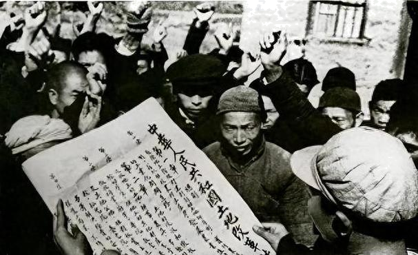 | | 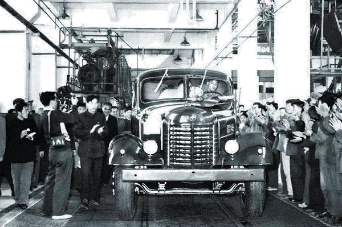 | 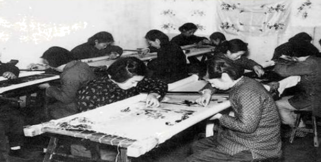 |
①《中华人民共和国土地改革法》受到广大农民的拥护（照片） | ②邱少云获授的朝鲜民主主义人民共和国一级国旗勋章 | ③中国第一批解放牌汽车在长春一汽试制成功（照片） | ④苏州刺绣手工业生产合作社的社员在精绣展品（照片） |
| 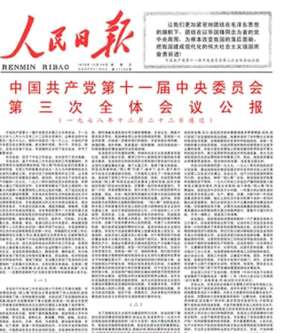 | 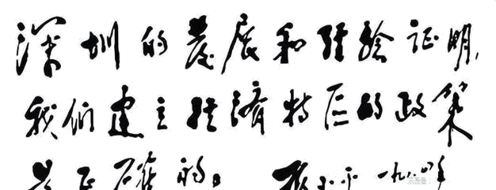 | 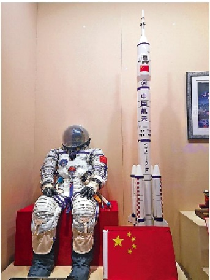 |
⑤毛泽东听过的“东方红一号”卫星播送的《东方红》乐曲磁带 | ⑥《人民日报》刊登的中共十一届三中全会公报 | ⑦邓小平为深圳经济特区的题词 | ⑧神舟九号航天员穿过的舱内宇航服 |
（2）依据材料二，任选两件展品，说明其反映的史事及其联系。（示例组合除外）
示例：⑤⑧
⑤我国成功地发射了第一颗人造地球卫星——东方红一号。
⑧我国实施载人航天工程，取得了伟大成就。
这两项成就都推动了我国航天技术的发展，增强了国防实力，提高了国际地位。
材料三 从党的一大会址到党的各个重要革命根据地，从土地革命、抗日战争、解放战争纪念地点到社会主义革命和建设、改革开放重要纪念场所等，每到一地，重温那一段段峥嵘岁月，回顾党一路走过的艰难历程，灵魂都受到一次震撼，精神都受到一次洗礼。每次都是怀着崇敬之心去，带着许多感悟回。
——习近平《用好红色资源赓续红色血脉努力创造无愧于历史和人民的新业绩》
（3）依据材料三并结合个人对于红色文化资源的参观学习经历，谈谈“用好红色资源，赓续红色血脉”的意义。
【答案】（1）示例：事件：①中共一大；意义：中共一大的召开标志着中国共产党的诞生，是中国历史上开天辟地的大事变，自从有了中国共产党，中国革命的面貌就焕然一新了。
（2）示例：⑥⑦。
⑥1978年，中共十一届三中全会召开，作出实行改革开放的伟大决策。
⑦1980年，中央决定在广东、福建两省兴办深圳、珠海、汕头、厦门4个经济特区。
改革开放和设立经特区促进我国社会经济的快速发展，促进综合国力的提升。
（3）示例：有利于传承中华优秀传统文化，有利于传承革命文化，有利于学习勇于实践探索的开拓精神、顽强拼搏的奋斗精神以及舍生取义的献身精神等。
【解析】
【小问1详解】
事件、意义：本题属于开放性试题，需要从图片中窥知相应的历史事件，以图片①为例，结合所学知识，图片①反映中共一大的召开，中共一大的召开标志着中国共产党的诞生，是中国历史上开天辟地的大事变，自从有了中国共产党，中国革命的面貌就焕然一新了。
【小问2详解】
史事：本题属于开放性试题，可以任选两个有联系的历史事件进行作答，以⑥⑦为例，根据材料“中共十一届三中全会公报”和“深圳经济特区”分析可知分别反映了⑥1978年，中共十一届三中全会召开，作出实行改革开放的伟大决策；⑦1980年，中央决定在广东、福建两省兴办深圳、珠海、汕头、厦门4个经济特区。
联系：结合所学知识，改革开放和设立经济特区促进我国社会经济的快速发展，促进综合国力的提升。
【小问3详解】
意义：本题属于开放性试题，可以从传承文化等角度进行作答，如：有利于传承中华优秀传统文化，有利于传承革命文化，有利于学习勇于实践探索的开拓精神、顽强拼搏的奋斗精神以及舍生取义的献身精神等。
23. 体育运动·时代变迁·社会发展
材料一 中世纪，体育运动在大众中不普及，学校不设体育课，只在骑士教育中有剑术和骑术等军事体育内容。1423年意大利教育家创立了一所“宫廷学校”，主张读书和运动相结合，制定了许多锻炼身体的制度和方法，体育成为学校教育的一项内容。1569年一位意大利医生在研究古代希腊、罗马体育和运动基础上出版《体操术》，主张民众应该从事多项运动以维持身体健康。
——摘编自谭华等《体育史》
（1）依据材料一并结合所学，指出15世纪前后体育运动发生变化及其时代背景。
材料二 19世纪初，欧洲工业化城市人口急剧增加。为了满足市民体育锻炼的场地需求，一些城市兴建了城市公园，促进了大众户外体育运动发展。19世纪中期，足球、网球等运动兴起并逐步形成了统一的运动规则。19世纪末20世纪初，各种商业体育俱乐部大量产生，主要通过出售门票获得商业利益：很多观众乘电车和火车到现场观赛。比赛消息还能通过电波和报纸传到各地，吸引大众参与体育活动。
——摘编自托尼·柯林斯《体育简史》等
（2）依据材料二并结合所学，概括19世纪初到20世纪初欧洲体育运动发展的表现、分析其发展的历史条件。
材料三 夏季奥运会参赛情况（部分）
| 第1届 （1896年） | 第2届 （1900年） | 第23届 （1984年） | 第29届 （2008年） | 第31届 （2016年） |
参赛国家和地区（个） | 14 | 26 | 140 | 204 | 207 |
参赛运动员（人） | 241 | 1226 | 6829 | 10942 | 11238 |
女子项目（项） | 0 | 2 | 62 | 127 | 145 |
奥林匹克格言是“更快、更高、更强”，2021年国际奥委会将“更团结（Together）”加入其中。
中国体育代表团出征北京2022年冬奥会纪念徽章（见右图），以五星红旗及“冰丝带”“雪如意”等现代化体育场馆为设计元素。奥运会徽章承载不同地区和民族的文化，观众、运动员等通过交换徽章，了解彼此，增进友谊。
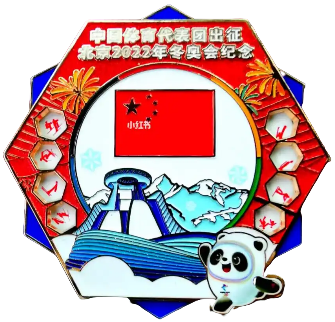
（3）依据材料三，概括现代奥林匹克运动会的发展情况。说明现代奥林匹克运动会在当今世界发挥的作用。
【答案】（1）
变化：从体育运动在大众中不普及、学校不设体育课且仅在骑士教育中有军事体育内容，变为体育成为学校教育的一项内容且有医生主张民众从事多项运动维持身体健康。
时代背景：文艺复兴运动兴起，人文主义思想传播，强调人的价值和尊严，重视人的全面发展，推动了体育观念的转变。
（2）
表现：城市公园兴建促进大众户外体育运动发展；足球、网球等运动兴起并形成统一运动规则；商业体育俱乐部大量产生，通过出售门票获得商业利益；观众数量增多，可乘电车和火车到现场观赛，也可以通过电波和报纸传播接收通讯，吸引大众参与体育活动。
历史条件：工业革命推动欧洲工业化城市人口急剧增加，为体育运动发展提供了人口基础；工业革命促进交通、通讯、等技术的发展，为人们参与体育运动和传播体育消息提供了便利条件；资本主义经济的发展为商业体育俱乐部的产生提供了经济基础。
（3）
发展情况：参赛国家和地区、参赛运动员数量不断增加；女子项目不断增多；奥林匹克格言加入 “更团结”；奥运会徽章承载文化，促进交流。
作用：促进了体育事业的发展；促进人类团结、合作的追求，有助于推动各国人民之间的交流与合作，增进相互理解和友谊；促进了不同地区和民族文化的交流与传播，丰富了世界文化的多样性。
【解析】
【小问1详解】
变化：根据材料一“体育运动在大众中不普及，学校不设体育课，只在骑士教育中有剑术和骑术等军事体育内容”“体育成为学校教育的一项内容”“1569年一位意大利医生在研究古代希腊、罗马体育和运动基础上出版《体操术》，主张民众应该从事多项运动以维持身体健康”可得出，15世纪前后体育运动发生的变化为从体育运动在大众中不普及、学校不设体育课且仅在骑士教育中有军事体育内容，变为体育成为学校教育的一项内容且有医生主张民众从事多项运动维持身体健康。
时代背景：根据材料一“1423年意大利教育家创立了一所“宫廷学校”，主张读书和运动相结合”“1569年一位意大利医生在研究古代希腊、罗马体育和运动基础上出版《体操术》”和所学知识可知，可以从文艺复兴的内容等角度进行分析时代背景，所以，时代背景为文艺复兴运动兴起，人文主义思想传播，强调人的价值和尊严，重视人的全面发展，推动了体育观念的转变。
【小问2详解】
表现：根据材料二“一些城市兴建了城市公园，促进了大众户外体育运动发展”可得出，城市公园的兴建促进大众户外体育运动发展；根据材料二“19世纪中期，足球、网球等运动兴起并逐步形成了统一的运动规则”可得出，足球、网球等运动兴起并形成统一运动规则；根据材料二“19世纪末20世纪初，各种商业体育俱乐部大量产生，主要通过出售门票获得商业利益”可得出，商业体育俱乐部大量产生，通过出售门票获得商业利益；根据材料二“很多观众乘电车和火车到现场观赛。比赛消息还能通过电波和报纸传到各地，吸引大众参与体育活动”可得出，观众数量增多，可乘电车和火车到现场观赛，也可以通过电波和报纸传播接收通讯，吸引大众参与体育活动。
历史条件：根据材料二“19世纪初，欧洲工业化城市人口急剧增加”和所学知识可知，工业化是工业革命带来的结论。因此，工业革命推动欧洲工业化城市人口急剧增加，为体育运动发展提供了人口基础；根据材料二“很多观众乘电车和火车到现场观赛。比赛消息还能通过电波和报纸传到各地”和所学知识可知，电车、火车、电波和报纸是工业革命的产物。因此，工业革命促进交通、通讯、等技术的发展，为人们参与体育运动和传播体育消息提供了便利条件；根据材料二“19世纪末20世纪初，各种商业体育俱乐部大量产生，主要通过出售门票获得商业利益”和所学知识可知，可以从资本主义经济角度进行分析，所以，资本主义经济的发展为商业体育俱乐部的产生提供了经济基础。
【小问3详解】
发展情况：根据材料三“夏季奥运会参赛情况（部分）”“参赛国家和地区（个）”“参赛运动员（人）”“女子项目（项）”可得出，从第1届到31届，参赛国家和地区、参赛运动员数量不断增加；女子项目不断增多；根据材料三“奥林匹克格言是‘更快、更高、更强’，2021年国际奥委会将‘更团结（Together）’加入其中。”可得出，奥林匹克格言加入 “更团结”；根据材料三“奥运会徽章承载不同地区和民族的文化，观众、运动员等通过交换徽章，了解彼此，增进友谊”可得出，奥运会徽章承载文化，促进交流。
作用：根据所学知识可知，可以从体育事业、人类团结、各国人民之间的交流与合作、增进友谊、促进民族文化的交流、丰富世界文化多样性等角度进行分析，所以，现代奥林匹克运动会在当今世界发挥的作用为促进了体育事业的发展；促进人类团结、合作的追求，有助于推动各国人民之间的交流与合作，增进相互理解和友谊；促进了不同地区和民族文化的交流与传播，丰富了世界文化的多样性。
24 书香北京
材料一 辽、金、元时期北京地区的图书业
时期 | 城市地位 | 发展 |
辽 | 辽南京（燕京），北方政治中心之一 | 辽、宋之间的榷场贸易方便了中原书籍的传入，辽统治者大量购入汉文书籍，燕京的书肆也开始刊刻汉文书籍，少儿启蒙常常以汉人诗词为教材。 |
金 | 金中都，区域政权的政治中心 | 金章宗多次下诏求购汉文书籍。中都是金朝图书交易的主要地区，刻售了经史、医学和民间说唱等书籍，重在满足民众的需求。 |
元 | 元大都， ① | 大都的书肆大量刻印儒家经典和文史书籍等，城内出现了专营某类图书的专业书肆和有固定场所的书籍市场，方便文人学士购书。 |
——摘编自马建农《北京古旧书业的行业特征及其影响》
（1）依据材料一并结合所学，将①处填写完整。写出辽、金、元时期，北京地区图书业发展的原因并分析其影响。
材料二 19世纪60年代后，京师同文馆翻译并出版了不少西方科学技术书籍。甲午中日战争后，京城书商翻译出版了一些有关政治制度、法律等方面的新书。20世纪初，北京出版界形成了一个出书热潮，鲁迅等人的作品深受青年读者欢迎。1919年，李大钊等人宣传新思想的作品也出现在东安市场的书店中。
——摘编自于丽萍《20世纪上半期北京书业发展研究》等
（2）依据材料二，结合史实说明近代北京图书出版与时代发展紧密相联。
材料三 据统计，2020年北京市共有四级公共图书馆5935个，馆舍总面积达67万平方米，比2019年增加了20%；数字资源也有了很大发展，首都图书馆的数字资源库多达108个。2023年开放的北京城市图书馆融入了智能服务，AI数智馆员提供阅读指导、个性推荐等服务；未来还能构建出虚拟与现实交融的阅读世界，读者可以探索知识的无垠边界。
——摘编自展圣洁等《探访北京城市图书馆》等
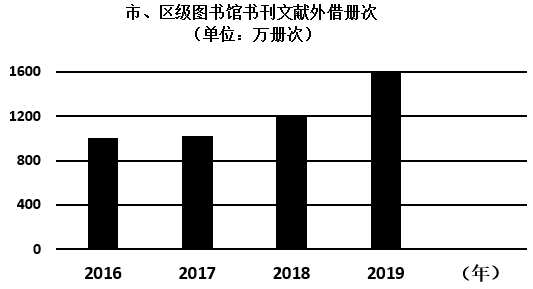
（3）依据材料三，写出近年来北京地区图书馆的发展情况。谈谈“书香北京”对你学习、生活的作用。
【答案】（1）①全国政治中心。
原因：经济交流与发展，榷场贸易的推动；统治者重视；书肆以及书籍市场的推动；政治中心的地位，推动了图书业的发展；受宋朝科技发达，文化昌盛，读书风气浓厚的影响。
影响：促进了文化的传播和交流，推动了民族融合；提升了民众的文化素养，满足民众需求，丰富了人们的精神生活。为后世的文化发展奠定了基础，保留了丰富的文化遗产。
（2）说明：①19世纪60年代，洋务运动主张学习西方技术以自强，因此，出版了不少西方科学技术书籍。②甲午战争后民族危机加深，人们开始探索政治制度变革以救亡图存，因此，出版有关政治制度、法律等方面的新书。③新文化运动和马克思主义在中国的传播，因此，鲁迅等人的作品深受青年读者欢迎，以及李大钊等人宣传新思想的作品出现。
（3）情况：公共图书馆数量众多，馆舍总面积增加；数字资源发展迅速，数字资源库增多；融入智能服务，提供个性化阅读指导等服务，未来还能构建虚拟与现实交融的阅读世界；市、区级图书馆书刊文献外借册次数逐年增加。
作用：有利于提供了广阔的知识获取渠道，拓展知识面，助力学业进步；提供了个性化推荐，提高学习效率；提供了宁静的阅读和学习空间，身心放松，充实精神世界；人们的业余生活，提升生活品质；营造了浓厚的文化氛围，促进了城市的文化建设和精神文明发展。
【解析】
【小问1详解】
①：根据材料一“元大都”“金中都，区域政权的政治中心”“辽南京（燕京），北方政治中心之一”和所学知识可知，元大都，即元朝都城，是全国的政治中心，在历史上有着重要的地位和影响。所以，①为全国政治中心。
原因：根据材料一“辽、宋之间的榷场贸易方便了中原书籍的传入”可得出，交流与发展，榷场贸易的推动；根据材料一“辽统治者大量购入汉文书籍”“金章宗多次下诏求购汉文书籍”可得出，统治者重视；根据材料一“燕京的书肆也开始刊刻汉文书籍”“大都的书肆大量刻印儒家经典和文史书籍等”“城内出现了专营某类图书的专业书肆和有固定场所的书籍市场”可得出，书肆以及书籍市场的推动；根据材料一“中都是金朝图书交易的主要地区”可得出，政治中心的地位，推动了图书业的发展；并结合宋朝的时代特征可知，受宋朝科技发达，文化昌盛，读书风气浓厚的影响。
【小问2详解】
说明：根据材料二“19世纪60年代后，京师同文馆翻译并出版了不少西方科学技术书籍”可得出，19世纪60年代，洋务运动主张学习西方技术以自强，因此，出版了不少西方科学技术书籍。
根据材料二“甲午中日战争后，京城书商翻译出版了一些有关政治制度、法律等方面的新书”可得出，甲午战争后民族危机加深，人们开始探索政治制度变革以救亡图存，因此，出版有关政治制度、法律等方面的新书。根据材料二“20世纪初，北京出版界形成了一个出书热潮，鲁迅等人的作品深受青年读者欢迎。1919年，李大钊等人宣传新思想的作品也出现在东安市场的书店中”和所学知识可知，可以从新文化运动以及马克思主义传播等角度进行分析，新文化运动和马克思主义在中国的传播，因此，鲁迅等人的作品深受青年读者欢迎，以及李大钊等人宣传新思想的作品出现。
【小问3详解】
情况：根据材料三“2020年北京市共有四级公共图书馆5935个，馆舍总面积达67万平方米，比2019年增加了20%”可得出，公共图书馆数量众多，馆舍总面积增加；根据材料三“数字资源也有了很大发展，首都图书馆的数字资源库多达108个”可得出，数字资源发展迅速，数字资源库增多；根据材料三“2023年开放的北京城市图书馆融入了智能服务，AI数智馆员提供阅读指导、个性推荐等服务；未来还能构建出虚拟与现实交融的阅读世界”可得出，融入智能服务，提供个性化阅读指导等服务，未来还能构建虚拟与现实交融的阅读世界；根据材料三“市、区级图书馆书刊文献外借册次(单位:万册次)”可得出，市、区级图书馆书刊文献外借册次数逐年增加。
作用：根据所学知识可知，可以从扩宽渠道、扩展知识、提高学习效率、充实精神世界、提升生活品质、营造文化氛围、促进城市文化和精神文明发展等角度进行分析，所以，“书香北京”对你学习、生活的作用为学习上：有利于提供了广阔的知识获取渠道，拓展知识面，助力学业进步；提供了个性化推荐，提高学习效率。生活上：提供了宁静的阅读和学习空间，身心放松，充实精神世界；丰富人们的业余生活，提升生活品质；营造了浓厚的文化氛围，促进了城市的文化建设和精神文明发展。